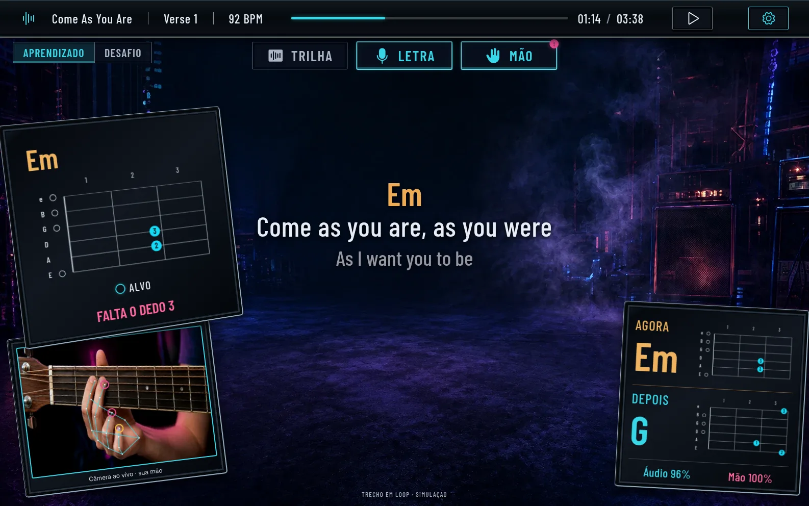
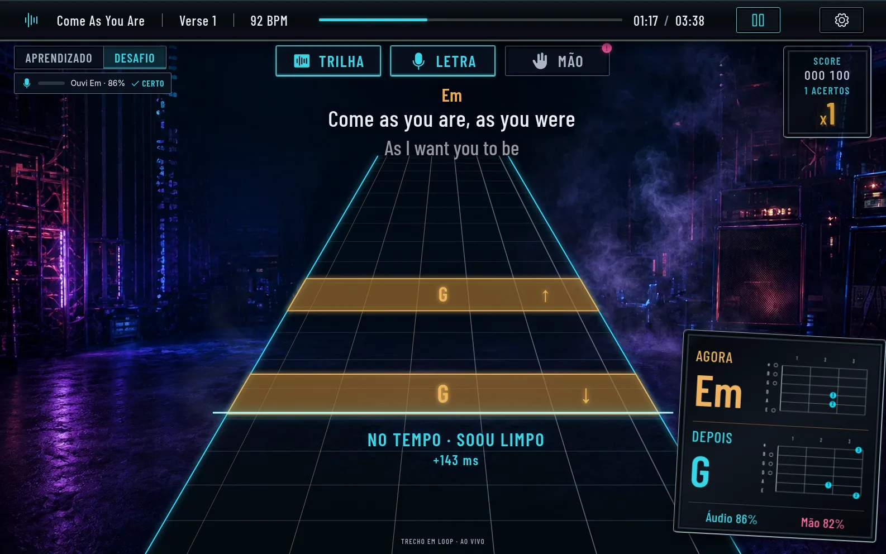
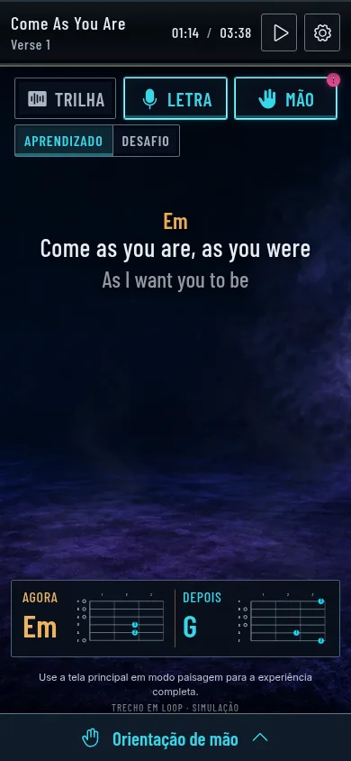

Toque a música.
A câmera confere a sua mão.
Uma pista de prática de violão que escuta o acorde que você toca, mostra a letra no tempo certo e confere, pela câmera, quais dedos estão firmes. Roda no navegador, sem instalar nada.

Toque, e o app escuta
No modo Desafio os acordes descem pela pista até a linha de acerto. Ligue o microfone e toque junto: o app reconhece o acorde e diz se foi no tempo, tarde, cedo ou se era outro acorde.
O score começa do zero a cada sessão. Se a permissão for negada, o app explica como liberar e volta para a demonstração simulada.

Três camadas, ligadas como você quiser
O modo Aprendizado liga a letra e o coach da mão. O Desafio liga a pista e o score. Dentro de cada modo, cada camada liga e desliga sem interromper a música.
- Trilha
- Acordes, notas e palhetadas descem pela pista até a linha de acerto. Desligada, a linha e o retorno de tempo continuam.
- Letra
- A frase atual e a próxima, no compasso da música, para você ler sem perder o lugar.
- Mão
- O coach compara os dedos que o acorde exige com os que a câmera vê firmes e diz qual falta ou está sobrando.
O diagrama do acorde é código, não imagem
Um gerador de imagens errou os marcadores do Em, então o diagrama passou a ser desenhado a partir dos dados musicais. O mesmo componente serve ao coach, ao acorde atual e ao próximo.
Em: dedo 2 na corda A, casa 2. Dedo 3 na corda D, casa 2. As outras cordas soam soltas.
O que funciona e o que ainda não
Funciona hoje
- Reconhece o acorde pelo microfone e o julga contra a pista, com acerto, atraso, acorde errado e falta
- Mostra a sua mão pela câmera, com esqueleto, e confere quais dedos estão firmes
- Modos Aprendizado e Desafio, com camadas Trilha, Letra e Mão
- Score com multiplicador, efeito elétrico com som opcional e fumaça de palco
- Tudo roda no navegador: o áudio e a imagem não saem do seu dispositivo
Ainda não
- Casa e corda de cada dedo: a conferência diz só se o dedo está dobrado
- Reconhece só os acordes da música (Em e G). Outro acorde vira o mais parecido
- A música não toca: você toca junto com a pista
- Não foi testado em celular nem com a calibração de mãos reais
Para onde vai
- Localizar o braço do violão para dizer a casa e a corda de cada dedo.
- Bends, palhetada e dedilhado, com sons e efeitos mais fortes no Desafio.
- O celular como câmera e microfone, com a análise no computador.
- Mais músicas e acordes, e histórico das sessões.

Experimente agora
O demo roda no seu navegador. Abra as configurações para ligar o microfone e a câmera, troque entre Aprendizado e Desafio e aperte Espaço para começar. Use fones ou volume baixo para o microfone não ouvir a si mesmo.